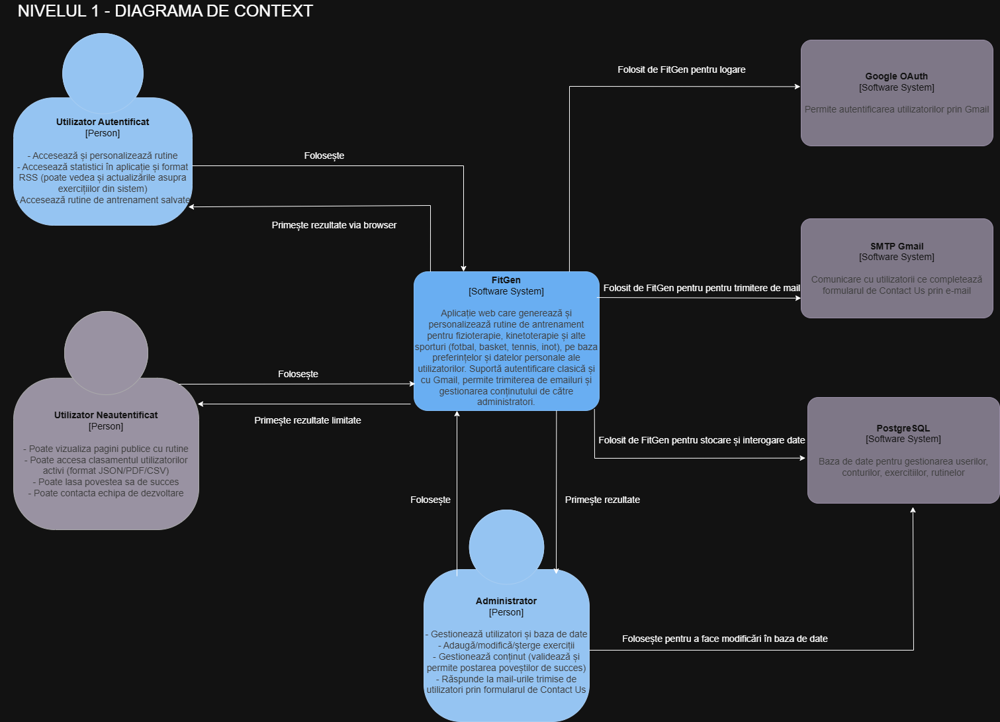
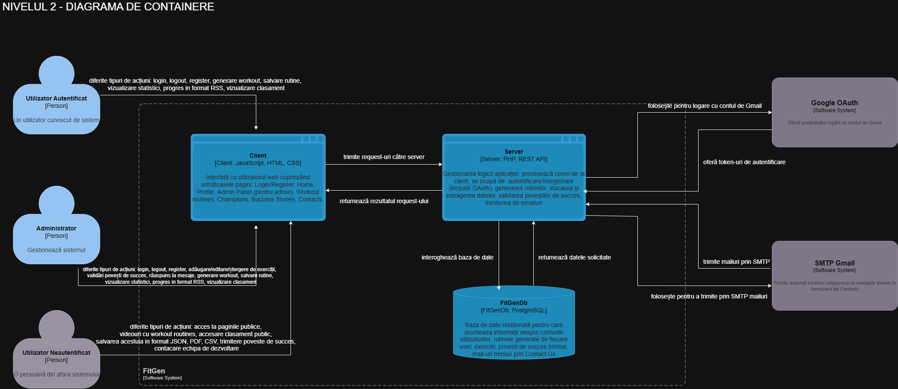
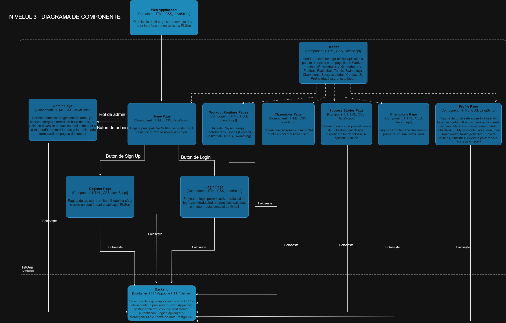

Autori
- Andreea Platon – platonandreea3@gmail.com
- Andreea Aramă – andreea.arama.01@gmail.com
1. Introducere
1.1 Scop
Scopul proiectului este de a dezvolta o aplicație web interactivă pentru generarea de rutine de antrenament personalizate pentru fizioterapie, kinetoterapie sau alte sporturi precum: fotbal, tenis, basket, înot. Rutinele sunt adaptate în funcție de datele personale (gen, vârstă, greutate, condiții medicale) și preferințele utilizatorului (grupă de mușchi, nivel de intensitate, durată, echipament, locație).
1.2 Convenție de scriere
Acest document urmează șablonul de documentație a cerințelor software conform IEEE Software Requirements Specification și standardului Scholarly HTML. Textul îngroșat este folosit pentru a accentua concepte importante.
1.3 Publicul țintă
Documentația este destinată utilizatorilor finali, dezvoltatorilor și profesorilor interesați de funcționalitatea și implementarea aplicației FitGen.
1.4 Scopul produsului
Aplicația oferă utilizatorilor un spațiu interactiv unde pot genera și salva rutine de antrenament personalizate, pot vizualiza statistici, clasamente, pot trimite întrebări și primi răspunsuri pe email.
1.5 Referințe
2. Descriere Generală
2.1 Perspectiva produsului
FitGen este o aplicație web cu backend PHP, ce permite generarea și vizualizarea unor rutine de antrenament personalizate și gestionarea progresului utilizatorului. Oferă interfață prietenoasă, export date, autentificare clasică și cu Gmail și comunicare prin email.
2.2 Funcțiile produsului
- Înregistrare și autentificare (standard și cu Gmail/OAuth)
- Personalizare profil și preferințe pentru antrenamente
- Generare automată de rutine cu instrucțiuni detaliate și exemple video
- Vizualizare statistici individuale în aplicație
- Clasament public al utilizatorilor activi (export JSON/PDF/CSV)
- Export statistici ca RSS
- Trimitere email (SMTP Gmail)
- Trimitere poveste de succes, cu validare de la admin pentru a apărea și pe site la secțiunea relevantă
2.3 Clase și caracteristici ale utilizatorilor
- Utilizator autentificat: accesează și personalizează rutine, accesează progres în aplicație și format RSS (poate vedea și actualizările asupra exercițiilor din sistem), accesează rutine de antrenament salvate.
- Utilizator neautentificat: poate vizualiza pagini publice, clasament al utilizatorilor activi, poate contacta echipa de dezvoltare.
- Administrator: gestionează utilizatori și baze de date, adaugă/modifică exerciții, gestionează conținut (povești de succes), comunică prin mail cu utilizatorii.
2.4 Mediul de operare
Produsul poate fi folosit pe orice dispozitiv cu browser modern (desktop, laptop, tabletă, telefon) și conexiune la internet.
2.5 Documentația pentru utilizator
Utilizatorii pot consulta acest document pentru explicații detaliate privind funcționalitățile aplicației. Pentru detalii suplimentare, vezi și demo-ul, precum și sursele din repo.
3. Interfețele aplicației
3.1 Interfața utilizatorului
- Bara de navigație: Navigare rapidă între paginile cheie: Workout Routines, Champions, Success stories, Contacts, Admin Panel (pentru administrator), Profile (când ești logat), Autentificare(Login, Register)/Logout
- Pagina de autentificare: Formular pentru username și parolă, login cu Gmail (OAuth), resetare parolă prin email, link către înregistrare
- Pagina de înregistrare: Formular pentru username, email, parolă, bifare termeni și condiții
- Pagina de acasă: Prezentare functionalități de bază ale aplicaței, secțiune pentru clasamentul celor mai activi utilizatori, galerie foto, povești de succes, secțiunea de contactare, credite
- Pagini dedicate fiecărei secțiuni (fizioterapie, kinetoterapie, fotbal, basket, tenis, înot): Vizualizare antrenamente predefinite (pot fi salvate în contul personal), informații relevante despre fiecare secțiune (de ce ai practica, la ce să te aștepți și atenționări), întrebări frecvente
- Pagina de profil: Secțiune de completare și editare profil, secțiuni separate pentru rutinele de antrenament create și salvate, statistici personale, formular responsabil pentru generarea de antrenament, flux RSS
- Pagina admin: Pagină pentru a răspunde automat din aplicație la mesajele primite, pagină pentru validarea poveștilor de succes și pagină pentru administrarea exercițiilor din sistem, cu formularele pentru editare, adăugarea unor exerciții noi, dar și ștergerea celor existente la necesitate
3.2 Interfața Hardware
Nu necesită hardware special. Se poate folosi pe orice dispozitiv cu browser web.
3.3 Interfața Software
- Browser compatibil HTML5, CSS3, JavaScript
- Backend PHP, microserviciu pentru OAuth
- PostgreSQL pentru stocare date
3.4 Interfața de comunicare
- HTTP
- API REST pentru frontend-backend
- SMTP pentru trimitere email
4. Caracteristici ale sistemului
4.1 Gestionarea contului
- Înregistrare: username, email, parolă
- Autentificare: username/parolă sau Gmail
- Confirmare email: la înregistrare (SMTP Gmail)
- Actualizare informații: Modificare date personale
- Condiții: Autentificare obligatorie pentru modificări de profil
4.2 Secțiunea Utilizatori
- Cont utilizator: Detalii profil, rutine de antrenament, statistici personale
- Admin: Manageriere mesaje, istorii de succes și exerciții
- Condiții: Drepturi de admin pentru modificări
4.3 Secțiunea Admin
- Gestionare: Adăugare/modificare/ștergere exerciții
- Actualizare: Gestionare baze de date de către admin
- Condiții: Autentificare ca admin
5. Funcționalități pentru protecție și securitate
- Protecția datelor personale (hashing parolă, token JWT)
- Validare input, protecție împotriva SQL injection și XSS
- Calități software: adaptabilitate, ușurință în utilizare, flexibilitate
6. Diagrama C4
  
Demo
Accesează Demo (adauga link dacă ai unul public)